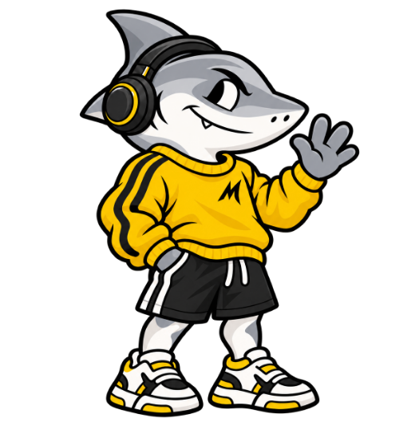

We started Mako because the places to back a call were never built for most people.
Sportsbooks hold your money and set the odds against you. On-chain markets ask for a wallet, gas and an order book before you can even say what you think. Somewhere between those two, the simple thing got lost: you think you know how this ends, and you want to stand behind it.
So Mako keeps only what a call really is. Two sides, one pot and a clock. You sign in with an email and pick a side. If you called it, you split what the other side put in. The contract settles it in the open, and if a result never comes, everyone gets their money back without asking anyone.
This page is how we designed the screens for that. Every choice on it came from one question: would someone putting their own money on a call trust this, and enjoy it?
Mako Market’s creative director and founderDesktop design system · 2026
